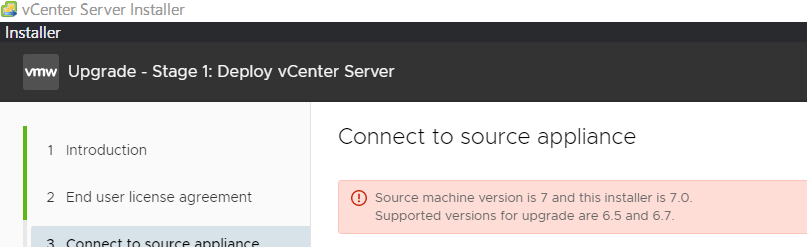

離線更新 VCSA (vCenter) 使用 iso
Contents
前言
這篇簡單紀錄透過使用 patch iso 映像檔，在沒有外網的情況下去做 upgrade。更新的原因很簡單，原本的 VCSA 7.0U1 還沒有跨 vCenter vMotion (Advanced Cross vCenter Server vMotion, XVM) 移轉的功能，必須要升級到 VCSA 7.0U1c 以上才有
- 網管人 - vSphere新版內建XVM 線上移虛機功能終告完整
- VMware KB - Cross vCenter Migration and Clone requirements in VMware vSphere 6.x and later (2106952)
- VMware vCenter Server 7.0 Update 1c Release Notes

▲ 使用 Installation iso 只能跨大版本升級。
步驟一. 下載 iso
patch 使用的 iso 與完整安裝使用的 Installation iso 不同，檔名結尾會有 patch-FP 字樣。Patch for VMware vCenter Server 7.0 Update 3
步驟二. 掛載 iso 到 VCSA VM
As title.

▲ 圖片來源
步驟三. 安裝
有兩種方式可以執行安裝。
- 打開瀏覽器
https://<VCSA_IP> or <VCSA_domain>:5480，點選左側的 Update。 - 透過 ESXi CLI
|
|
這次是透過 CLI 安裝，安裝成功後 shell 會被關閉變黑屏，本來以為是自動 reboot 了後來切換到 5480 管理介面後才發現 Uptime 還卡在 2xx days 根本沒有重開。所以必須手動 reboot
參考資料
Author 老柯
LastMod 2022-06-21